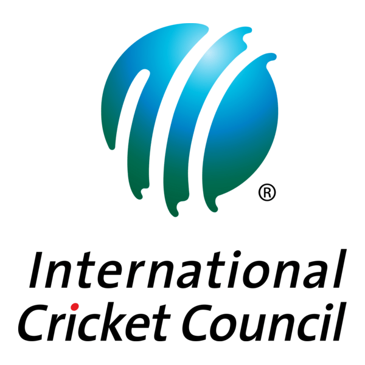

Cricket was created in south-east England during the medieval period, likely between the Saxon and Norman times. The earliest definitive written evidence of the sport being played dates back to a court case in Guildford, Surrey, in January 1597 (modern calendar).
Cricket spread globally via the expansion of the British Empire during the 18th and 19th centuries. British colonists, merchants, and military personnel carried the game to their territories, establishing early roots in North America, India, Australia, the West Indies, and South Africa.
Cricket is regulated globally by the International Cricket Council (ICC). Headquartered in Dubai, United Arab Emirates, the ICC administers the game, formulates playing codes, manages international match officials, and coordinates major tournaments like the ICC Men’s and Women’s Cricket World Cups.

Cricket is played between two teams of 11 players each, where one team bats to score runs and the other bowls and fields to take wickets; the team with the higher total runs wins. Key rules include scoring by running or hitting boundaries, overs of six legal balls, and dismissals such as bowled, caught, LBW, run out, and stumped.
1. Objective of the Game Score more runs than the opposing team. Teams alternate between batting and bowling/fielding. An innings ends when 10 batters are out or overs are completed (in limited-overs formats). 2. Teams and Field Setup Each team has 11 players. Two batters are on the field; all 11 fielders are active when fielding. The game is played on an oval field with a 22‑yard pitch in the center. Each end of the pitch has a wicket (three stumps + two bails). 3. How Runs Are Scored Running: Batters run between the wickets (1, 2, or 3 runs). Boundary (4): Ball reaches boundary after bouncing. Six (6): Ball clears boundary without bouncing. Extras: Wides, no-balls, byes, leg byes. 4. Ways a Batter Can Be Out (Wickets) Common dismissals include: Bowled: Ball hits stumps. Caught: Ball caught before touching ground. LBW: Ball hits batter’s body in line with stumps. Run Out: Fielder breaks stumps while batters run. Stumped: Wicketkeeper removes bails when batter is out of crease. 5. Overs and Bowling One over = 6 legal deliveries by a bowler. Bowlers alternate ends after each over. No-balls and wides give extra runs and must be re-bowled. 6. Match Formats Test: 2 innings per team, unlimited overs. ODI: 1 innings per team, 50 overs. T20: 1 innings per team, 20 overs. 7. Basic Terms Run: Unit of scoring. Wicket: A dismissal or the stumps. Innings: Team’s turn to bat. Boundary: Edge of field; hitting it scores 4 or 6. Bowler/Batter/Fielder: Key roles in play. Cricket’s core is the contest between bat and ball, with all rules supporting fair scoring and dismissal.
Sir Donald Bradman: Often regarded as the greatest batsman of all time, with an unmatched Test batting average of 99.94
Sachin Tendulkar: Known as the "Little Master," he holds the record for the most runs in international cricket and has 100 international centuries
Sir Vivian Richards: A dominant batsman known for his aggressive style, he played a key role in West Indies cricket during the 1970s and 1980s
Shane Warne: One of the greatest spin bowlers in cricket history, he took over 700 Test wickets and was known for his charismatic personality
Brian Lara: Renowned for his elegant batting, he holds the record for the highest individual score in Test cricket (400 not out)
Source of information